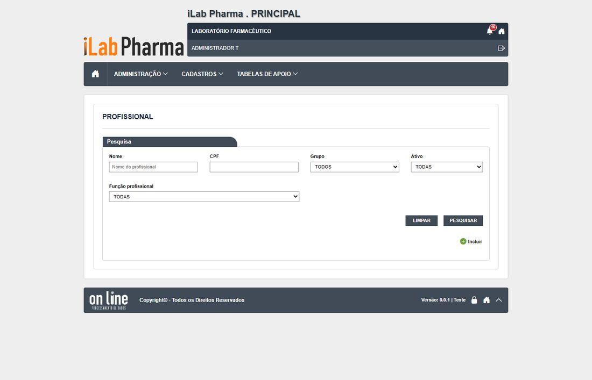
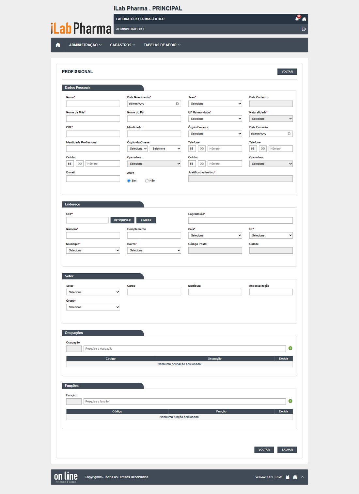

Em uma olhada
| Casos executados | Igual | Regressão | Melhoria | Novo | Bloqueado | Defeitos listados |
|---|---|---|---|---|---|---|
| 7 | 4 | 2 | 1 | 0 | 0 | 3 |
Classes: Igual (mesmo comportamento do sistema entregue, inclusive a falha), Regressão (piorou), Melhoria (falhava e agora funciona), Novo (o sistema entregue não tinha resultado) e Bloqueado (não deu para executar).
O que a tela faz
Cadastro das pessoas que trabalham na empresa (profissionais). É o primeiro passo para criar um usuário: Profissional (Incluir) → Conta usuário (login e validade) → Perfis (permissão).
- São 15 campos obrigatórios; cada um é recusado com mensagem clara, antes da pergunta de confirmação (no legado a ordem era diferente).
- O CPF não é validado: aceitou 000.000.000-00, 111.111.111-11, dígito errado e letras. Só o CPF repetido é recusado. (O legado validava.)
- Editar não exige justificativa; o campo de justificativa é opcional e não é gravado no histórico. O telefone alterado não entra no histórico.
- Inativar exige justificativa e grava "ATIVO SIM → NÃO" e "JUSTIFICATIVA INATIVO".
- Excluir com justificativa grava e some da lista. Profissional com conta, ou que já criou registros, não pode ser excluído, e a recusa não diz qual é a associação.
Como a tela é


Resultado dos testes
| Caso | Cenário | Legado | Versão nova (o que a tela mostrou) | Classe | Defeito |
|---|---|---|---|---|---|
| CT-PRI-040 | Incluir profissional e conta | Passou (DV-PRI-003) | Criados 11 vezes. Histórico: "INCLUSÃO DO REGISTRO" e "INCLUSÃO DA CONTA" | Igual | DV-PRI-003 |
| CT-PRI-041 | Campos obrigatórios e formatos | Passou (12 obrigatórios) | 15 obrigatórios recusados um a um. CPF não validado | Regressão | DV-PRI-N-016 |
| CT-PRI-044 | Editar com justificativa e ver o histórico | Falhou (DV-PRI-004) | Grava sem pedir justificativa; a justificativa digitada não é gravada; telefone não entra no histórico. O cargo em branco do legado não se repete | Regressão | DV-PRI-N-015 |
| CT-PRI-045 | Inativar com justificativa | Passou | Exige justificativa; histórico "ATIVO SIM → NÃO"; o usuário não entra | Igual | — |
| CT-PRI-047 | Excluir sem histórico | Passou (falta DBA) | Exclui com justificativa (204) e some da lista; o histórico do excluído deixa de ser acessível. Falta o DBA confirmar a lixeira | Igual | — |
| CT-PRI-048 | Excluir profissional com conta ou histórico | Falhou (DV-PRI-006) | Recusado: "existem associações para este usuário", sem dizer qual. O legado excluía sem avisar | Melhoria | — |
| CT-PRI-049 | Excluir sem justificativa | Passou | Profissional: "A justificativa é obrigatória." | Igual | — |
Evidências (capturas): CT-PRI-040 a 049 (rodada 2, partes A e C). As capturas ficam na pasta evidencias/ de cada rodada.
Defeitos e pontos de atenção
| Defeito | Gravidade | O que acontece |
|---|---|---|
| DV-PRI-N-015 | Alta | Editar profissional não exige justificativa, a justificativa digitada não é gravada e o telefone alterado não entra no histórico. Regressão (o legado exigia e gravava). |
| DV-PRI-N-016 | Alta | CPF não é validado (000.000.000-00, 111.111.111-11, dígito errado e letras aceitos). Regressão pelo código (usuario_ed.aspx.cs:1980 valida no legado); o legado não foi rodado na tela. |
Para quem desenvolve
- Validar os dígitos do CPF e a lista de CPFs negados, como o legado (N-016).
- Tornar a justificativa de edição obrigatória, gravá-la no histórico e registrar todo campo alterado, inclusive telefone (N-015; requisito RF-PRI-020/024).
- Quando a exclusão for recusada, dizer qual é a associação (RF-PRI-041).
Para quem testa (QA)
- Cada usuário de teste precisa de um profissional: veja a página "Usuários de teste". Profissionais 17 a 28 são os usuários; 29
T. SEM CONTA TESTE; 31 a 35 são os testes de CPF. - Para repetir o CPF, use outros valores: o CPF repetido é recusado.
Para a gestão
- A identificação confiável da pessoa (CPF válido) e a trilha de alterações são exigências da norma (ALCOA+). As duas regrediram na versão nova (N-015, N-016).
O passo a passo para homologar esta tela está na página seguinte.